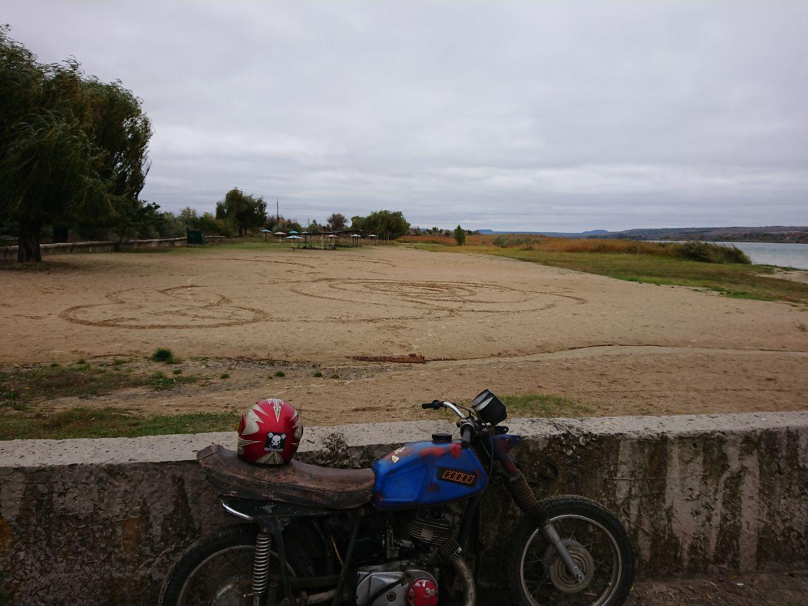

Как я «заболел» мотоциклом
В детстве у меня был только велик. Друг иногда гонял на мопеде – неделями крутя гайки, что бы потом со страшным ревом и копотью поездить минут сорок. Потом мопед приходилось разбирать опять и ковыряться еще неделю. Такое увлечение мне не было интересно и потому к мототехнике меня не тянуло совершенно :).
То самое, смутное, непонятное и щемящее чувство в душу принес американский кинематограф – на ревущие, здоровенные хромовые мотоциклы спокойно смотреть не удавалось ни разу – безоговорочно хотелось такой же, и еще «вот такую же точно жилетку джинсовую и кожаные штаны». Само собой, что это все было от меня настолько далеко, насколько и вся Америка.
Шли годы, появилась семья, заботы, работы… За взлетами и падениями моей карьеры мотоциклы ушли далеко на задворки сознания. Но не исчезли. Мечта коварно сиганула ввысь и прибила меня со всей мочи после того, как я на китайской выставке увидел стройные ряды сверкающих байков и посмотрел ценник (эти фото я уже когда то выкладывал, но не жалко и еще раз показать).

Средняя цена такого аппарата с 250-кубовым двигателем была 900-1200 долл.
Я понял, что двухколесную мечту очень и очень реально купить. И она не будет стоить заоблачных «много десятков тысяч долларов». Конечно, не факт что я бы купил именно такой – двигатель был явно маловат (у меня на тот момент уже была вполне хорошая японская машина с 2х литровым двигателем), но стало ясно что «это» где то очень близко к воплощению в жизнь. Собственно тогда я и почувствовал тот неприятный холодок сомнения внутри — «а вдруг вся эта хромовая мечта – просто голливудский туман? Вдруг я сейчас напрягусь, куплю этот здоровенный мотоцикл, сяду на него, проеду и… ничего не почувствую? Вообще ничего! Может это вовсе не так офигенно – нестись с ревом вперед, как показывает экран кинотеатра??».
Ну что ж – любые сомнения разрешаются просто — надо попробовать. И не просто сесть, проехать, а научиться ездить (при чем так научиться, что бы не бояться и не падать) и тогда уже можно сесть в себе разобраться – «твое» или нет. Решено — учусь.
Обратился к друзьям (они как раз ехали на свой мотокросс, за город): — возьмите с собой, пока вы отдыхать будете – я в перерывах попробую, а вы расскажете, что к чему!
Взяли :). Дали шлем, перчатки свои одел, в джинсах и джинсовой куртке — вдруг упаду. Рассказали о конструкции, где какая педаль, на что жать, и куда тянуть. Кроссовая ямаха, 250 кубиков. Высокий центр тяжести, сам мотоцикл очень легкий. Первое упражнение очень простое – тронуться и не заглохнуть (у меня машина с автоматом была, навык езды с ручной коробкой был утерян почти полностью). Тронулся… Еду прямо, доезжая до конца дорожки, решаю развернуться влево. Разворачиваясь, переднее колесо попадает в ямку и я, чувствуя, что теряю равновесие, как то рефлекторно откручиваю ручку «на себя». Лежу. Встаю, целы и я, и мотоцикл. Ребята ржут – «ты такие свечи творишь, что люди по 5 лет учатся, что бы так сделать!». В общем, в тот день я падал еще раз, но понял, что падать не страшно (на грунте, вне дорожного полотна) и тихонько уже ездил по кругу и восьмерками. На первой передаче. До второй так и не добрался – слишком безбашенный характер у кроссовика.

Что бы нормально учиться и не гробить дорогую чужую технику решил взять недорогой китайский мопед, на механике (обычно это самые дешевые модели). Как раз подвернулся нормальный вариант Pegasus 48QT-11A, с хорошим двигателем, 90 кубиков. Всего за 400 долл.
Собрали мне его, вывезли на ДОСААФ-овскую площадку для вождения и гоняли пока я безошибочно и спокойно не научился трогаться, переключать передачи и останавливаться «Возле этого колышка. Тут я сказал, а не на 2 метра дальше!!!». Переключать передачи оказалось не самым трудным, самым трудным было трогаться так, что бы не глохнуть. На следующий раз сдал другу «экзамен» и он разрешил мне ездить по городу.
Сначала ездил по периферийным улочкам, где почти нет машин – привыкал к габаритам, тормозному пути, прохождению поворотов и вообще, старался понять и «прочуствовать» свое место на дороге. Через пару дней освоился и гонял уже как заправский гонщик. Отъездил я 2 месяца на своем мопеде. Потом сел – настало время подвести черту и решить. Собственно, садиться было и незачем – я уже знал, что хочу большой мотоцикл. Теперь уже точно и конкретно хочу, осознанно.
Опущу подробности, как ходил по мотосалонам и просился посидеть то на одном, то на другом мотоцикле. Спорты для себя отбросил сразу – не мое (я очень спокойный по натуре человек), хотел что то с «ногами вперед и рулем, широченным, как рога баффало», но с глубокими крыльями – словом, классику. Выбор пал на Yamaha Drag Star 1100A (хотя мечтой был 1900 Midnight Star – он мне до сих пор иногда снится). Но пока я ходил вокруг да около, моя Aquila GV650 выбрала меня сама. (Для тех, кто не знает — это мотоцикл крупного корейского производителя Hyosung (здоровенная корпорация со многими направлениями деятельности и производства).
Мой любимый вид спорта (баскетбол)
Я хочу рассказать о моем любимом виде спорта — баскетболе. Многие люди думают, что заниматься в секции могут только люди с ростом выше среднего. Но это неправда — туда берут всех желающих, а вот для соревнований выбирают уже самых перспективных.

Я всю свою жизнь получал огромное удовольствие от физкультуры и любил играть в подвижные игры. Баскетбол — замечательный вид спорта, который у человека развивает быстроту реакции, ловкость и координацию движений. А выносливость, умение концентрировать внимание и гибкость мышц становятся намного лучше.

Игра меня захватила буквально сразу. После соревнований я никогда не чувствую огромной усталости, да и травмы у меня и моих друзей случаются очень редко. Еще я благодарен баскетболу за то, что он научил меня играть в команде. Как бы мне ни хотелось быть нападающим, но, если мои физические данные позволяют мне быть хорошим защитником, то я буду им, потому что так лучше для всех.
Занятия баскетболом дают мне почувствовать радость от собственных достижений. Сначала у меня не очень прицельно получалось бросать мяч, а теперь я, подросток, легко обыгрываю летом в пляжные игры взрослых. И мне очень нравится слышать из их уст комплименты, как я замечательно играю в баскетбол.
Я очень рад, что когда-то в мою жизнь вошла эта замечательная игра. За это время я стал выше, выносливее и увереннее в себе. К тому же у меня появились замечательные друзья, вместе с которыми так здорово радоваться нашим победам.